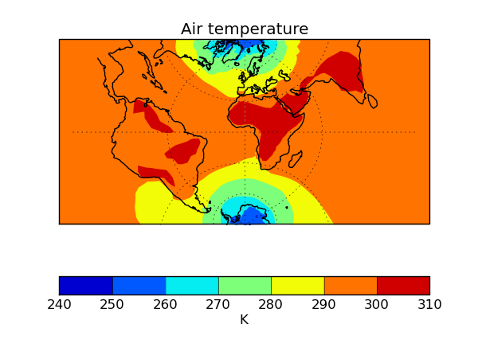

v1.5 (13 Sep 2013)¶
This document explains the changes made to Iris for this release (View all changes.)
Features¶
Scatter plots can now be produced using
iris.plot.scatter()andiris.quickplot.scatter().The functions
iris.plot.plot()andiris.quickplot.plot()now take up to two arguments, which may be cubes or coordinates, allowing the user to have full control over what is plotted on each axis. The coords keyword argument is now deprecated for these functions. This now also gives extended 1D plotting capability.# plot a 1d cube against a given 1d coordinate, with the cube # values on the x-axis and the coordinate on the y-axis iris.plot.plot(cube, coord)
iris.analysis.SUMis now a weighted aggregator, allowing it to take a weights keyword argument.GRIB2 translations added for standard_name ‘soil_temperature’.
iris.cube.Cube.slices()can now handle passing dimension index as well as the currently supported types (string, coordinate), in order to slice in cases where there is no coordinate associated with a dimension (a mix of types is also supported).# Get cube slices corresponding to the dimension associated with longitude # and the first dimension from a multi-dimensional cube. for sub_cube in cube.slices(['longitude', 0]): print(sub_cube)
iris.experimental.animatenow provides experimental animation support.# Create an iterable of cubes (generator, lists etc.) cube_iter = cubes.slices(('grid_longitude', 'grid_latitude')) ani = animate(cube_iter, qplt.contourf) plt.show()
Support for UM ancillary files truncated with the UM utility ieee
Complete support for Transverse Mercator with saving to NetCDF also.
import cartopy.crs as ccrs import iris import iris.quickplot as qplt import matplotlib.pyplot as plt fname = iris.sample_data_path('air_temp.pp') temperature = iris.load_cube(fname) plt.axes(projection=ccrs.TransverseMercator()) qplt.contourf(temperature) plt.gca().coastlines() plt.gca().gridlines() plt.show()
Support for loading NAME files (gridded and trajectory data).
Multi-dimensional coordinate support added for
iris.analysis.cartography.cosine_latitude_weights()Added limited packaged GRIB support (bulletin headers).
In-place keyword added to
iris.analysis.maths.divide()andiris.analysis.maths.multiply().Performance gains for PP loading of the order of 40%.
iris.quickplotnow has ashow()function to provide convenient access to matplotlib.pyplot.show().iris.coords.DimCoord.from_regular()now implemented which creates aDimCoordwith regularly spaced points, and optionally bounds.Iris can now cope with a missing bounds variable from NetCDF files.
Added support for bool array indexing on a cube.
fname = iris.sample_data_path('air_temp.pp') temperature = iris.load_cube(fname) temperature[temperature.coord('latitude').points > 0] # The constraints mechanism is still the preferred means to do such a query. temperature.extract(iris.Constraint(latitude=lambda v: v>0)))
Added support for loading fields defined on regular Gaussian grids from GRIB files.
iris.analysis.interpolate.extract_nearest_neighbour()now works without needing to load the data (especially relevant to large datasets).When using plotting routines from
iris.plotoriris.quickplot, the direction of vertical axes will be reversed if the corresponding coordinate has a “positive” attribute set to “down”.New PP stashcode translations added including ‘dewpoint’ and ‘relative_humidity’.
Added implied heights for several common PP STASH codes.
GeoTIFF export capability enhanced for supporting various data types, coord systems and mapping 0 to 360 longitudes to the -180 to 180 range.
Bugs fixed¶
NetCDF error handling on save has been extended to capture file path and permission errors.
Shape of the Earth scale factors are now correctly interpreted by the GRIB loader. They were previously used as a multiplier for the given value but should have been used as a decimal shift.
OSGB definition corrected.
Transverse Mercator on load now accepts the following interchangeably due to inconsistencies in CF documentation:
+scale_factor_at_central_meridian <-> scale_factor_at_projection_origin
+longitude_of_central_meridian <-> longitude_of_projection_origin (+recommended encoding)
Ellipse description now maintained when converting GeogCS to cartopy.
GeoTIFF export bug fixes.
Polar axis now set to the North Pole, when a cube with no coordinate system is saved to the PP file-format.
iris.coords.DimCoord.from_coord()andiris.coords.AuxCoord.from_coord()now correctly returns a copy of the source coordinate’s coordinate system.Units part of the axis label is now omitted when the coordinate it represents is given as a time reference (
iris.quickplot).CF dimension coordinate is now maintained in the resulting cube when a cube with CF dimension coordinate is being aggregated over.
Units for Lambert conformal and polar stereographic coordinates now defined as meters.
Various fieldsfile load bugs including failing to read the coordinates from the file have been fixed.
Coding of maximum and minimum time-stats in GRIB2 saving has been fixed.
Example code in section 4.1 of the user guide updated so it uses a sample data file that exists.
Zorder of contour lines drawn by
contourf()has been changed to address issue of objects appearing in-between line and filled contours.Coord comparisons now function correctly when comparing to numpy scalars.
Cube loading constraints and
iris.cube.Cube.extract()correctly implement cell equality methods.
Deprecations¶
The coords keyword argument for
iris.plot.plot()andiris.quickplot.plot()has been deprecated due to the new API which accepts multiple cubes or coordinates.iris.fileformats.pp.PPField.regular_points()andiris.fileformats.pp.PPField.regular_bounds()have now been deprecated in favour of a new factory methodiris.coords.DimCoord.from_regular().iris.fileformats.pp.add_load_rules()andiris.fileformats.grib.add_load_rules()are now deprecated.